1．引言
积分方程是未知函数出现在积分号内的方程，解方程的问题就是要确定这个函数。我们不久就会看到，数学物理中有些问题直接导致积分方程，而另一些问题则导致常微分或偏微分方程，但却可以把它们转换为积分方程而很快得到处理。起初，解积分方程被看作反积分。积分方程这个术语是属于杜波依斯-雷蒙的(1)。
在数学的其他分支中，个别的包含积分方程的问题，远在这门学科取得明显地位和研究方法以前，就已经出现了。例如，拉普拉斯在1782年(2)就考虑过由
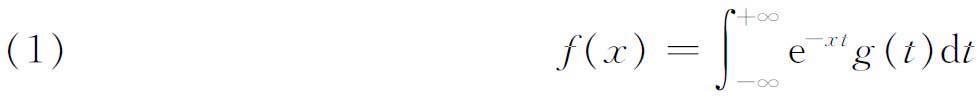
给出的g（t）的积分方程。方程（1）就今天的情况来说，称为g（t）的拉普拉斯变换。泊松(3)发现了g（t）的表达式，就是
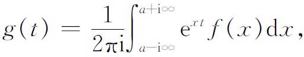
其中a充分大。另一个真正属于积分方程史的值得注意的结果，来自傅里叶1811年关于热的理论的著名文章（第28章第3节）。在那里可以看到
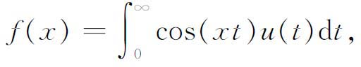
以及反演公式
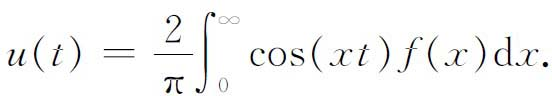
第一个自觉地直接应用并解出积分方程的人是阿贝尔。在他最早发表的两篇文章中（第一篇发表在1823年一个不出名的杂志上(4)，第二篇发表在Journal für Mathematik上(5)），阿贝尔考虑了下面的力学问题：一质点从P出发沿光滑曲线（图45.1）滑到点O。曲线位于一铅直平面上。在O点的速度与曲线的形状无关，但从P到O所需的时间则不然，设（ξ，η）是P与O之间任一点Q的坐标，s是OQ的弧长，则质点在Q点的速度由
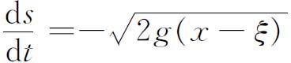
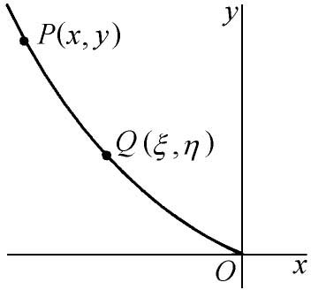
图45.1
给出，其中g是重力常数。因此
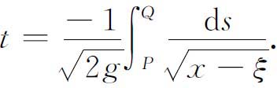
在这里s可以通过ξ表示出。设s为v（ξ），于是从P到O的整个下降时间T便是
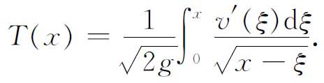
显然对任何一条曲线来说时间T依赖于x。阿贝尔提出的问题是，给定了T作为x的函数，求v（ξ）。如果我们引入
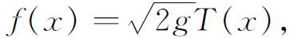
问题就变成从方程
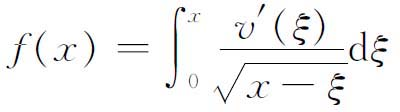
确定v。阿贝尔得到解
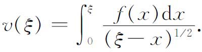
他的方法（他给出了两个）很特别，因而不值得注意。
实际上，阿贝尔着手解决的是更为一般的问题：
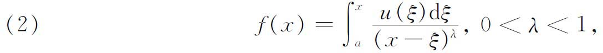
并且得到了解
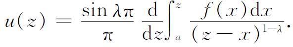
刘维尔独立于阿贝尔，自1832年起解出了一些特殊的积分方程(6)。刘维尔跨出的最有意义的一步(7)是表明某些微分方程的解怎样可以通过解积分方程得到。所要求解的微分方程是
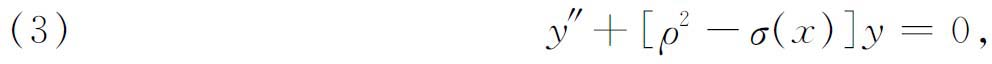
其中a≤x≤b，ρ是参数。设u（x）是满足初始条件
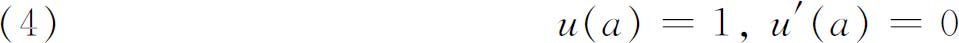
的一个特解。这个函数也一定是非齐次方程
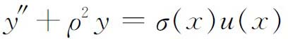
的解。应用常微分方程的基本结果，便有
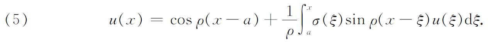
这样，如果我们能解这个积分方程，我们就将得到微分方程（3）的满足初始条件（4）的解。
刘维尔得到这个解，用的是被认为属于卡尔·诺伊曼（Carl Gottfried Neumann）的逐次代入法，卡尔·诺伊曼的著作《对数和牛顿位势的研究》（Untersu-chungen über das logarithmische und Newton'sche Potential，1877）是30年后发表的。我们将不叙述刘维尔的方法，因为它实际上和沃尔泰拉所给出的相同，后者是我们要简略地叙述的。
阿贝尔和刘维尔所处理的积分方程都属于基本的类型。阿贝尔的形式是
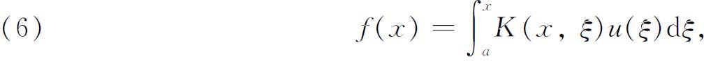
而刘维尔的形式是
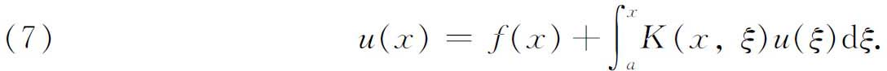
在两种情形中，f（x）与K（x，ξ）是已知的，而u（x）是待定的函数。用希尔伯特引入的今天在使用的术语来说，它们分别属于第一类和第二类方程，K（x，ξ）称为核。一般说来，它们也称为沃尔泰拉方程，而当上限是固定数b时，它们就称为弗雷德霍姆方程。实际上，沃尔泰拉方程是相应的弗雷德霍姆方程的特殊情形，因为人们总可以取K（x，ξ）＝0当ξ＞x，而这样就把沃尔泰拉方程归结为弗雷德霍姆方程。f（x）≡0这种第二类方程的特殊情形，称为齐次方程。
在19世纪中叶，积分方程的主要兴趣，是围绕着解与位势方程
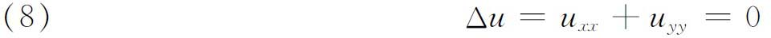
有关的边值问题，方程要在某条曲线C所围成的已知平面区域内成立。u的边值是某一函数f（s），它作为沿曲线C的弧长s的函数给出。这时位势方程的一个解可以表示成
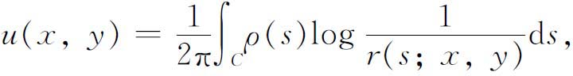
其中
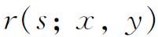
是点s到区域内部或边界上任一点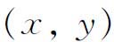
的距离，而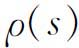
是一未知函数，它对C上的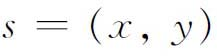
满足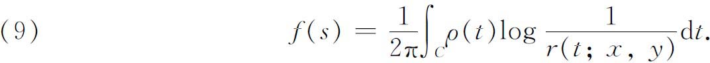
这是ρ（t）的一个第一类积分方程。换一种选择，如果把（8）的满足同样边界条件的一个解取作
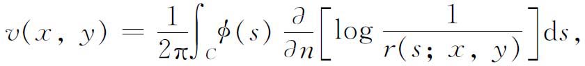
其中
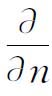
表示边界上的法向微商，那么φ（s）必须满足积分方程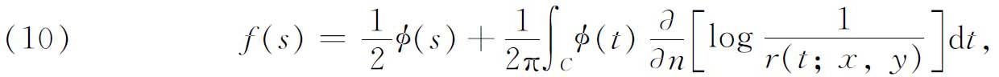
这是第二类的积分方程。这些方程对于凸区域的情形，由卡尔·诺伊曼在他的《研究》以及在以后发表的论文中解出来了。
偏微分方程的另一个问题也是通过积分方程来解决的。在波动的研究中出现了方程
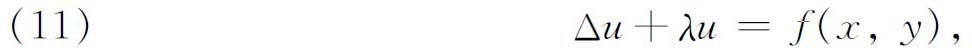
当相应的双曲方程
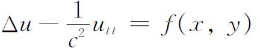
中出现的时间函数（通常取作
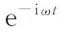
）被消去的时候就是这样。大家知道（第28章第8节），附有边界条件的相应于（11）的齐次方程，只有对λ值的一个离散集才有非平凡解，这些λ值称为特征值。庞加莱在1894年(8)考虑了带复λ值的（11）的非齐次情形。他巧妙地导出了λ的一个亚纯函数，当λ不是特征值的时候，这个函数表示方程（11）的唯一解，而这个函数的留数就引出齐次方程即f＝0时的特征函数。基于这些结果，庞加莱在1896年(9)研究了方程
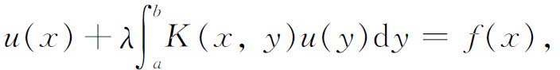
这是他从（11）导出来的，他并且断言，解是λ的亚纯函数。这个结果是由弗雷德霍姆（Erik Ivar Fredholm）在我们即将谈到的一篇文章中建立起来的。
上述例子说明，把微分方程转换为积分方程，变成求解常微分与偏微分方程的初值与边值问题的重要技巧，并且是研究积分方程的最强大的动力。